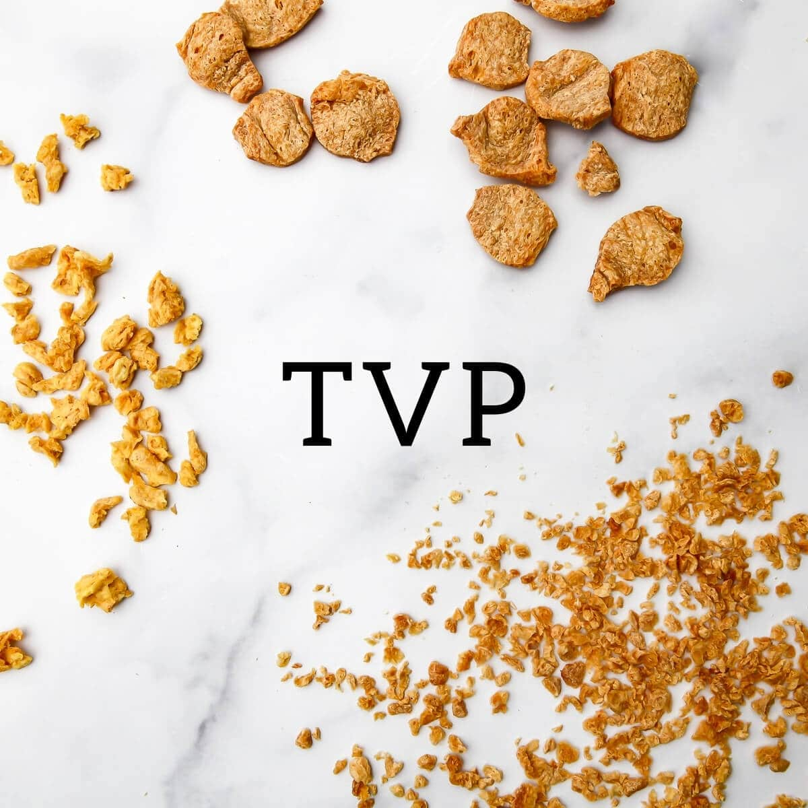

TEXTURED VEGETABLE PROTEIN

- 1/2 Cube Veg. Bouillon
- 8 oz. (1 C.) Hot Water
- 1 C. Dry Textured Vegetable Protein (defatted soy flour)
WHISK WATER AND BOUILLON INTO STOCK SOLUTION
POUR HOT WATER/VEG STOCK
OVER TVP TO REHYDRATE
-protein is now ready to eat. add to chili for a groundy turkey emulation or pulse in processor to make burger patties-
HOME